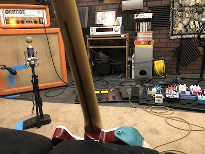
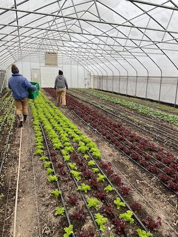

Gallery
Myself with two statues at the Palace of Gold in New Vrindaban, West Virginia.
My friend Molly in front of Henry Clay Furnace,
the oldest standing pig-iron furnace in the United States.
My fiancé Liv and I finished our 11-mile
hike at the summit of Gorham Mountain in Acadia National Park, Maine. Exhaustion? What do you mean, 'exhaustion'?

A picture of my gear in the studio, taken during a break from recording the Sabo Cat album.
My friends and I went to Helvetia, West Virginia to celebrate Fasnacht - a holiday brought over by Swiss-Catholic immigrants.
Myself playing violin for a few songs of Zoe's set at Riverfest in Moundsville, WV
Masked up, nervous, and ready to run the Canaan Valley Half Marathon. I surprised myself and my supporters by coming in 7th place overall in my first ever half

Many of my friends work or have worked for Grow Ohio Valley, I was blessed to be able to volunteer my time with such wonderful folks.
John, Zac, Christian, and I had an impromptu rollerblade night. It was the first time we'd been together since the beginning of covid lockdowns
Darcie, myself, and a sliver of Eric. Our band was called Sabo Cat, and this was Darcie's first set with us. She played way better than her face would portend.